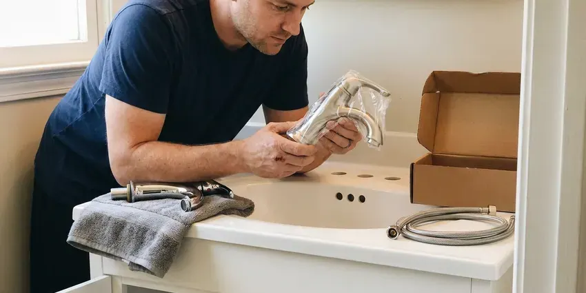

Toilet Repair in Centennial, CO
From worn flappers to cracked wax seals, our plumbers find the real cause and fix your toilet the same day in Centennial, CO.
- Fast, Local Service
- Guaranteed Repairs
- Fill and Flush Valves On Hand
- Upfront Flat-Rate Pricing
Need Professional Toilet Repair Services in Centennial, CO?
Tell us what your toilet is doing and we will give you a firm price before any work starts.
Reliable Toilet Repair Solutions for Centennial, CO Homeowners
When you're dealing with a troublesome toilet in Centennial, CO, GFR Plumbing is here to help. We understand the urgency of toilet repairs and provide quick, lasting solutions for homeowners throughout the area.
Our expertise includes:
- Diagnose and fix all toilet leaks.
- Repairing leaking toilet tanks and bowls
- Clearing stubborn toilet clogs

Additional Bathroom Plumbing Services in Centennial, CO
From toilets to showers, our bathroom plumbing team in Centennial, CO handles repairs, installs, and upgrades with tidy, code-compliant work.




Faucet Installation near Centennial


Customers
Why Choose GFR Plumbing for Toilet Repair in Centennial, CO?
We focus on effective solutions that prevent future problems, saving you time and money on repeated service calls. Our commitment to quality ensures your toilet repair is done right the first time.
- Leak Testing, We dye-test the tank and check the base so hidden leaks do not get missed.
- Quality Parts, We use only reliable, high-quality toilet components for lasting repairs.
- Accurate Diagnosis, Our plumbers use professional tools to pinpoint the exact cause of your toilet's malfunction, from worn-out flappers to blocked trapways.
Citywide Coverage
GFR Plumbing proudly serves every neighborhood in Centennial for your toilet repair needs. Whether you're in the heart of downtown or the surrounding suburbs, our plumbers are local and ready to respond.
Experienced Team
Our plumbing team has broad experience with the common toilet issues homeowners face, including problems related to hard water and older plumbing systems. We are regularly trained on the latest repair techniques and toilet technologies.
Safety-First Approach
We shut off water at the angle stop and protect your floors before any repair begins. If we find a rotted subfloor or a broken flange, we show you before going further.
Trusted Certified Centennial Plumbing Services Professionals
At GFR Plumbing, we take pride in providing certified plumbing services throughout Centennial, CO. Backed by recognized industry credentials, our experienced plumbers combine technical skill with genuine customer care. Whether it is repair, installation, or maintenance, we follow strict safety and quality standards to deliver lasting results you can trust.
Call Us Now PHCC Plumbing Contractor Recognition
PHCC Plumbing Contractor Recognition Better Business Bureau (BBB) Accreditation
Better Business Bureau (BBB) Accreditation Angi Certified Pro
Angi Certified Pro ISO 9001 Quality Management Certification
ISO 9001 Quality Management CertificationDependable Toilet Repair Services in Centennial, CO
Brands We Service in Centennial, CO
GFR Plumbing is proficient in repairing toilets from all leading manufacturers commonly found in Centennial, CO homes and businesses. This includes popular brands like Kohler, American Standard, Toto, Delta, Eljer, and Gerber. Our plumbers are familiar with the specific designs and proprietary parts of these brands, allowing for accurate diagnosis and efficient repair. We stock a wide range of common replacement parts to ensure that most repairs can be completed on the first visit, regardless of your toilet's brand or model.

Leaking Toilet Base Repair in Centennial, CO
Water around the base typically means the wax ring has failed or the toilet has been rocking on a loose flange. On slab foundations, the flange often sits on concrete and can crack when bolts are overtightened. We pull the toilet, inspect the flange, install a repair ring or new flange if needed and reset the bowl on a new seal. We also check for soft flooring so you know if any water damage needs attention.
Running Toilet Repair in Centennial
A running toilet is not just annoying, it can waste hundreds of gallons of water a day, leading to significantly higher water bills. This common issue is usually caused by a faulty flapper, a misaligned fill valve, or an improperly adjusted float. Our plumbers promptly identify the exact cause, whether it's mineral buildup from hard water affecting the flapper seal or a worn-out component, and replace the necessary parts to stop the continuous flow and restore efficiency.
Commercial Toilet Repair in Centennial
Commercial toilets often endure heavier use and require specialized parts and expertise for repair. GFR Plumbing offers complete toilet repair services for businesses and commercial properties throughout Centennial. We understand the importance of minimizing downtime for your restrooms and provide efficient, durable repairs for flushometer toilets, low-flow models, and standard commercial units, ensuring your business operations run smoothly.
Running Toilet Fixes in Centennial
A toilet that constantly runs or refills itself intermittently is not only annoying but also a major water waste. This issue in Centennial is typically caused by a faulty flapper valve, an improperly adjusted float, a worn-out fill valve, or sediment buildup. Our technicians diagnose the specific component causing the problem and replace it with durable, long-lasting parts. We ensure proper alignment and adjustment of all internal mechanisms to restore your toilet's efficient operation and stop wasted water consumption.
Toilet Flush Mechanism Repair in Centennial, CO
If your toilet isn't flushing properly, it could be due to issues with the flush chain, handle, flapper, or fill valve. A weak flush might mean the tank isn't filling correctly, while a loose handle might not be engaging the flapper. Our plumbers are skilled at diagnosing these internal tank problems, replacing worn or broken components like flush valves, fill valves, and toilet handles to restore full and effective flushing power.
Pressure-Assist and Dual-Flush Repair in Centennial
Pressure-assist toilets from Sloan Flushmate and dual-flush models from TOTO and American Standard use parts that hardware stores seldom stock. We carry cartridges, flush buttons and seals for the common models and can order specialty parts quickly. These systems need correct pressure settings to work well, so we test incoming water pressure as part of the repair.

Toilet Gasket and Seal Replacement in Centennial, CO
The gaskets and seals within your toilet tank and at its base are crucial for preventing leaks. Over time, these rubber components can degrade, crack, or become brittle due to age and exposure to water, especially where the water is hard. We focus on replacing worn-out flapper seals, tank-to-bowl gaskets, and the wax ring at the toilet's base, which is essential for preventing leaks onto your bathroom floor and maintaining a watertight seal.
Toilet Repair Near Me in Centennial, CO
When you search for 'toilet repair near me' in Centennial, CO, you want a trusted local expert who can respond fast. GFR Plumbing is located to serve the entire Centennial area, ensuring that our plumbers can reach your home or business promptly. We pride ourselves on providing friendly, neighborhood-focused service.
Our commitment to the Centennial community means we're always close by, ready to address your toilet repair needs promptly. We pride ourselves on being the go-to local experts for all plumbing issues, delivering quality service right to your door.
GFR Plumbing at a Glance
- Licensed and insured plumbers serving Centennial, CO
- 24/7 emergency service with same-day scheduling
- Upfront, flat-rate pricing before work begins
- 4.8-star rated by 750+ Colorado customers
Centennial Map
Centennial Information
- Population
- 106,883
- Area codes
- 303/720/970
- Service area
- Centennial and communities within 40 miles
- Nearby
- Highlands Ranch, Parker, Aurora, Denver
Around Centennial, a yearly water heater flush helps clear the scale that collects at the bottom of the tank. Timely toilet repair in Centennial, CO prevents wasted water and hidden floor damage before it spreads.
Expert Services
Trust our professionals for reliable GFR Plumbing solutions in Centennial, CO.
Our Specialized Plumbing Services in Centennial, CO
At GFR Plumbing, we provide a complete range of plumbing services across Centennial, CO. From leak detection to full system installations, our team ensures fast, precise, and affordable service for both residential and commercial properties. Explore our core services below:


How Our Toilet Repair Process Works in Centennial, CO
At GFR Plumbing, we follow a consistent, step-by-step process for every toilet repair to guarantee quality results for our Centennial, CO customers.
Request a Quote
Call (720) 727-9398 or fill out our online form to schedule your toilet repair service. We'll gather initial details about your issue and arrange a convenient appointment time.
Expert Diagnosis
Our skilled plumber arrives on time, performs a thorough inspection of your toilet, and accurately diagnoses the problem. We use specialized tools to pinpoint leaks or blockages.
Clear Estimate
Before any work begins, you'll receive a detailed, upfront estimate for the repair. We explain the recommended solution and answer all your questions.
Frequently Asked Questions About Toilet Repair in Centennial
The cost of toilet repair in Centennial, CO can vary widely depending on the issue. Minor repairs like replacing a flapper might range from $120 to $250, while more complex issues such as main drain clogs or wax ring replacements could be between $200 and $500. We provide a clear, upfront estimate after diagnosing the problem.
A failed wax ring or a loose, cracked flange is the usual cause. Condensation on the tank can also drip down and look like a base leak. We pull the toilet, inspect the flange and reset it on a new seal.
Repeated toilet clogs can be caused by a variety of factors. These include flushing non-biodegradable items, excessive use of toilet paper, a low-flow toilet design that struggles with waste volume, or more serious issues like a partially blocked drain line, tree root intrusion in the sewer line, or even a damaged or improperly vented main stack.
Yes, GFR Plumbing stands behind the quality of our work. We offer a warranty on both the parts we install and the labor performed during your toilet repair. The specific warranty details will be provided at the time of service, ensuring your peace of mind.
To prevent future toilet problems, avoid flushing non-biodegradable items, use appropriate toilet paper, and address small issues like a running toilet promptly. Regular plumbing maintenance and annual inspections can also help catch potential problems before they escalate.
While some minor running toilet issues, like a simple flapper adjustment, can be DIY, more complex problems might require a professional. If you're unsure about the cause, or if the issue persists after basic troubleshooting, calling GFR Plumbing ensures an accurate diagnosis and lasting repair, avoiding potential water waste or damage.
Absolutely. A continually running toilet can silently waste hundreds, if not thousands, of gallons of water per month. Even a small leak can add up dramatically on your water bill over time, making prompt repair a wise financial decision.
Weak flushing can be caused by several issues, including insufficient water in the tank, a clogged rim jet, a partially closed stop valve, or a partial clog in the drain line. Our plumbers can diagnose the precise cause and restore full flushing power.
What People Are Saying About Our Plumbing Experts?

Laura S.
I scheduled a water heater replacement, and the team made the process smooth and affordable. The new unit works perfectly, and they cleaned up after completing the job.
Water Heater Replacement · Denver, CO
Daniel K.
A pipe burst at 11 pm and they actually answered. The plumber showed up within the hour, shut everything down, and had us back to normal the next morning. Could not ask for more.
Emergency Plumbing · Aurora, CO
James P.
Our commercial plumbing system had a leak under the sink, and GFR Plumbing handled it professionally. The plumbers arrived quickly and restored everything without disruption to our customers.
Commercial Plumbing · Lakewood, CO
Emily R.
I called GFR Plumbing for plumbing repair, and the technician was fast, polite, and thorough. They explained the problem clearly and fixed it the same day. I will definitely hire them again. Highly recommended!
Plumbing Repair · Centennial, CORobert G.
The trenchless sewer replacement saved our front yard. They walked us through the camera inspection footage first so we knew exactly what we were paying for.
Sewer Line Replacement · Aurora, CO
Mark T.
When our office needed drain cleaning, GFR Plumbing provided quick, reliable service. The plumber arrived on time and made sure every drain flowed perfectly before leaving. Very satisfied.
Drain Cleaning · Castle Rock, CO